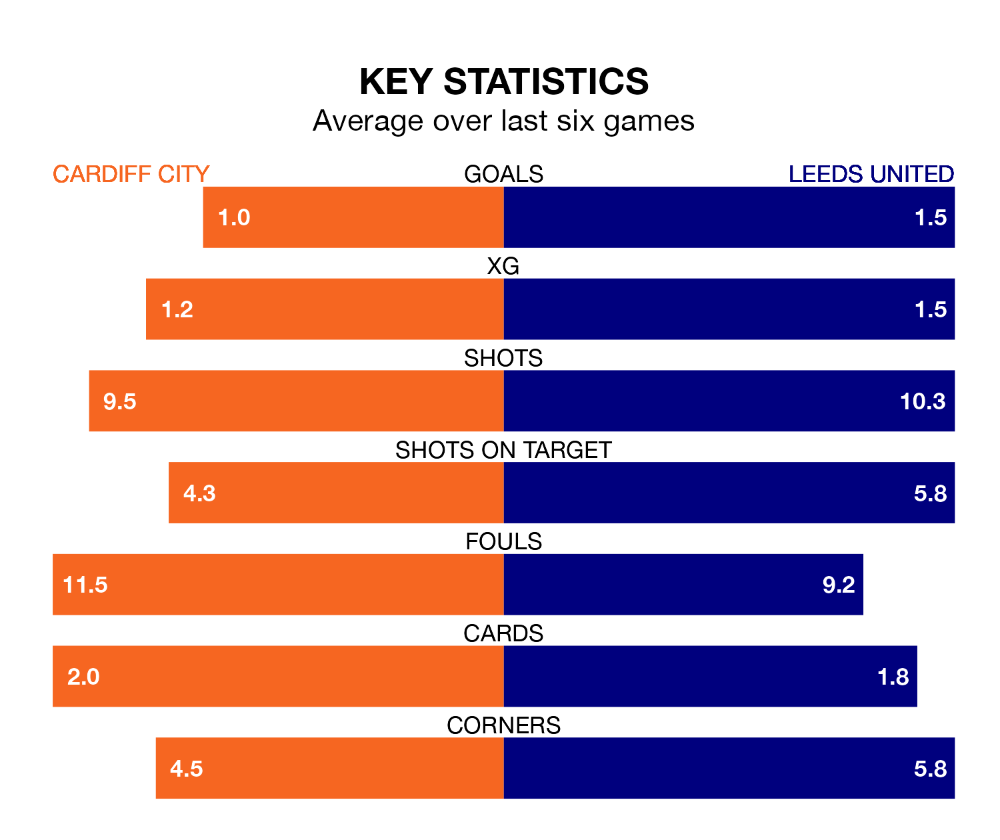

Leeds United are strong favourites to take all three points despite Cardiff City's home advantage in Saturday's match at the Cardiff City Stadium.
*Betting Company* are offering odds of 1.65 on Leeds sealing the win, with the visitors sitting fourth in the Championship table.
Cardiff, who are ninth in the league and 11 points behind Leeds, are priced at 5 to win. A draw is set at 3.75.
With 45 goals in 26 games so far this season, Leeds are scoring more than average in the league with 1.7 goals per game. And they are conceding fewer than average, letting in 25 goals at a rate of 1.0 per game.
Cardiff, meanwhile, are below average scorers, with 1.3 goals per game, compared to a league average of 1.4. They have also conceded 1.3 goals per game.
In the last 10 years, Cardiff and Leeds have played each other on 13 occasions. Cardiff won six of them, Leeds four, and they drew three times.
On average, the Bluebirds scored 1.9 goals and Leeds 1.6 in those matches.
Their last meeting was on August 6, when they played out a 2-2 draw.
United's Georginio Rutter is the league's most creative player, racking up nine assists in 25 appearances so far this season.
For City, Joe Ralls has set up the most goals, having laid on six assists in 22 games.
The Bluebirds are in mixed form in the Championship, with two wins and a draw from their last six games.
And also with two wins and a draw over that period, the visitors' form is identical – they have both taken seven points from 18.
Cardiff's last match was on January 1, a 2-1 win against Queens Park Rangers, with Dimitrios Goutas and Perry Ng getting the goals for the Bluebirds.
Leeds beat Birmingham City 3-0 last time out, also on January 1, with Crysencio Summerville, Daniel James and Patrick Bamford on the scoresheet.
Saturday's match will be refereed by Oliver Langford, who has taken charge of 15 Championship games so far this season, issuing four red cards and booking 52 players. He has not awarded any penalties.
The last Cardiff game Langford refereed was a 0-0 away draw with Stoke City on November 4. His last Leeds match was their 1-1 draw away at Rotherham United on November 24.
Updated: 10:50, 10/01/24